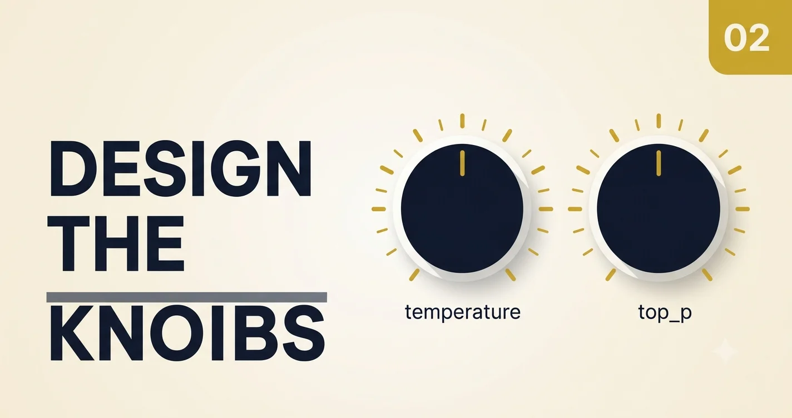

Parameters: Turning LLM Behavior into a Design Choice
Temperature, top_p, and output limits are not "fine tuning" knobs you twist until the demo feels good. They are behavioral contracts. This memo covers what each parameter actually does in production, when to change it, and how teams get burned when they tune blindly.
Parameters are multipliers, not fixes
If retrieval is returning wrong chunks or your system prompt is ambiguous, lowering temperature will not save you—it will give you the same wrong answer, more confidently. Parameters shape how the model expresses an answer, not whether it has the right facts.
If you cannot describe your failure pattern in one sentence, you are not ready to tune parameters yet.
Parameter Cockpit — explore the knobs
Use the cockpit below to feel how settings change consistency, creativity spread, and cost/latency risk. The sampling chart illustrates how higher temperature flattens the model's preference (more token paths become likely). Hit Simulate 5 runs to see how the same prompt might diverge—educational simulation, not a live API call.
Parameter Cockpit
Pick a workload, move the sliders, watch behavior signals change.
Sampling landscape (illustrative)
Same prompt, five simulated completions
Prompt: "Is this customer eligible for a refund after 45 days?"
{}
flowchart LR
T[Task profile] --> PR[Preset: compliance / creative / extract]
PR --> S[Sampling: temperature + top_p]
S --> G[Generate completion]
G --> E[Evaluate: consistency vs variety]
E --> T
What each parameter actually controls
Temperature
Scales randomness in token selection. At 0, the model picks the highest-probability token almost every time (deterministic for a fixed prompt). At 1+, outputs can diverge sharply between runs—useful for brainstorming, dangerous for policy answers.
Top_p (nucleus sampling)
Limits sampling to the smallest set of tokens whose cumulative probability exceeds p. Low top_p narrows the field; high top_p widens it. Tuning both temperature and top_p high is a common source of chaos.
Max output tokens
Hard cap on completion length. This is your primary lever for cost and latency, and for preventing runaway answers. Too low truncates reasoning; too high invites filler.
Frequency / presence penalties
Discourage repetition. Helpful in long-form generation and agent loops where the model re-phrases the same idea. Less useful when you need strict JSON or fixed templates.
Temperature vs top_p — don't tune both blindly
- Need repeatability? Lower temperature first (0–0.3), keep top_p moderate (0.85–0.95).
- Need phrasing variety? Raise temperature slightly before widening top_p.
- Outputs feel "drunk"? You probably have both high—pull one down.
- JSON / extraction tasks? Low temperature, fixed schema, modest max tokens.
Real-world problems from bad parameter policy
Production issue
Demo settings shipped to prod
Temperature 0.9 stayed in the API wrapper "because marketing liked the energy." Compliance answers varied week to week until legal escalated.
Production issue
One global default for twelve endpoints
Support, summarization, and SQL generation shared the same profile. Summaries were starved; SQL was overly creative.
Production issue
Agent planner on creative settings
Tool selection step used ideation parameters. Wrong tools fired intermittently—hard to reproduce, expensive to debug.
Production issue
No max_output_tokens on public endpoints
A single power user triggered 4k-token completions; p99 latency breached SLO and monthly budget alerts fired.
Incident log: five failures and what fixed them
| Incident | Symptom | Adjustment | Result |
|---|---|---|---|
| Compliance assistant drift | Different policy emphasis per run | temperature 0.15, top_p 0.9, strict schema | Stable answers across repeated prompts |
| Sales copilot verbosity | Long fluffy answers | max_output_tokens 450 | Faster, clearer takeaways |
| Creative drafts too similar | Repetitive variants | temperature 0.75, top_p 0.98 | Wider idea spread |
| Agent loop unpredictability | Erratic tool sequencing | Constrained profile on planner step only | Stable multi-step execution |
| Support bot cost surge | +40% daily token spend | Output caps + shorter fallbacks | Cost normalized, CSAT held |
Tuning runbook (order matters)
- Define pass/fail examples for one task category.
- Freeze prompt and retrieval before parameter experiments.
- Change one knob at a time; tag versions in config.
- Measure quality, latency, and cost together.
- Ship profile routing by intent, not one-size-fits-all.
const POLICY = {
qa_strict: { temperature: 0.15, top_p: 0.9, max_output_tokens: 500 },
assistant_balanced: { temperature: 0.35, top_p: 0.95, max_output_tokens: 750 },
ideation: { temperature: 0.8, top_p: 1.0, max_output_tokens: 1100 },
};
const profile = routeIntent(intent);
const response = await llm.responses.create({
model: "gpt-4.1-mini",
input: prompt,
...POLICY[profile],
});FAQ from engineering leaders
One company-wide default?
Baseline defaults are fine; behavior profiles per endpoint are required.
Fastest cost win?
Audit max_output_tokens and retry loops first.
When to revisit policy?
When prompts, tools, or task mix change materially.
Your challenge
Export a config from the Cockpit for your worst-performing endpoint. Run 20 fixed test prompts at your old settings vs the new profile. If variance drops and quality holds, you have evidence—not vibes—for the change.